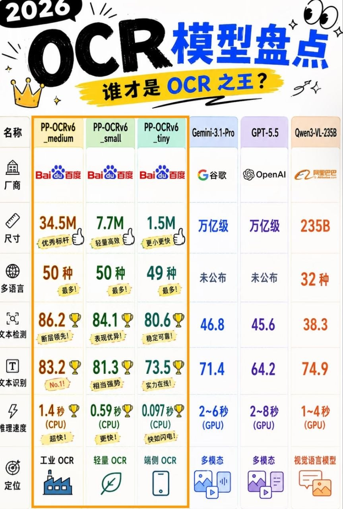

OCR · 图谱研究手册
2026 OCR 模型盘点
谁才是 OCR 之王？
这张卡把你给的对比截图拆成两层：一层是图中展示的数值和结论，另一层是可核实的公开资料。重点不是把大模型神化，而是搞清楚：OCR 这个任务，到底是专用小模型更强，还是多模态大模型更方便。
graph-paper
ocr
paddleocr
qwen3-vl
gemini
openai
关系图specialized OCR → multimodal OCR → platform OCR
图中证据用户截图中可见的内容
截图里到底画了什么
图上把 PP-OCRv6_medium / small / tiny 三个模型放在橙框里，和 Gemini-3.1-Pro / GPT-5.5 / Qwen3-VL-235B 做横向对比。左侧是 8 个指标：名称、厂商、尺寸、多语言、文本检测、文本识别、推理速度、定位。顶部还有“谁才是 OCR 之王？”的结论型标题。
图中内容适合直接放进卡片的“证据区”，不要把它直接等同于官方定论；我会在正文里单独注明“图中展示”。

已把用户截图本地化为卡片证据图，后续 HTML 会直接嵌入这张图，避免只写结论不留证据。
参数对比图中数值 + 事实校对
读法说明
图中最强结论是：PP-OCRv6 系列在检测/识别/速度上明显更像“专用 OCR 工具”，而 Gemini / GPT / Qwen3-VL 更像“多模态通用模型”。这不代表后者不能做 OCR，而是它们的强项更多在图像理解、跨模态推理与通用任务。
| Model | Size | Lang | Det | Rec | Speed | 定位 |
|---|---|---|---|---|---|---|
| PP-OCRv6_medium | 34.5M | 50 | 86.2 | 83.2 | 1.4s CPU | 工业 OCR |
| PP-OCRv6_small | 7.7M | 50 | 84.1 | 81.3 | 0.59s CPU | 轻量 OCR |
| PP-OCRv6_tiny | 1.5M | 49 | 80.6 | 73.5 | 0.097s CPU | 端侧 OCR |
| Gemini-3.1-Pro | 万亿级* | 未公布 | 46.8 | 71.4 | 2~6s GPU | 多模态 |
| GPT-5.5 | 万亿级* | 未公布 | 45.6 | 64.2 | 2~8s GPU | 多模态 |
| Qwen3-VL-235B | 235B | 32 | 38.3 | 74.9 | 1~4s GPU | 视觉语言模型 |
图上最值得保留的判断
01
PP-OCRv6 更像“专业 OCR 工具链”小模型、CPU 直跑、语言覆盖广，适合批量文档、票据、终端和边缘设备。
02
Gemini / GPT / Qwen3-VL 更像通用视觉模型能做 OCR，但同时强在看图、推理、对话和多模态执行，OCR 不是它们唯一任务。
03
速度与部署成本差异很大图中 CPU vs GPU 的差异，本质上就是“便携部署”与“通用能力”之间的取舍。
事实校对
公开资料里可以确认的是：PaddleOCR/PP-OCR 系列是百度飞桨的开源 OCR 工具库，支持多语言、检测 / 识别 / 方向分类，并提供从模型训练到部署的完整链路。PP-OCRv5 是近一代主线，默认已经进入 PaddleOCR 3.5 生态。对 Gemini / OpenAI / Qwen3-VL 来说，官方更强调多模态与视觉语言能力，OCR 常作为其中一项能力，而非唯一定位。
注意图片中的“Gemini-3.1-Pro / GPT-5.5”命名，我在公开官方资料里没有直接核到对应的 OCR 官方型号名，因此在卡片里会标为“图中展示 / 未核实官方对应”，避免把宣传图误写成官方定名。
安装下载把图上“怎么跑”补完整
PaddleOCR / PP-OCRv6 怎么装
最短路径
python -m venv ocr-env source ocr-env/bin/activate pip install paddleocr # 或更完整：pip install "paddleocr[all]" # 进阶：安装对应 paddlepaddle 版本后 # 直接调用 PaddleOCR(lang='ch')
经验如果要做 CPU 边缘部署，优先看轻量模型；如果要做完整 OCR 流水线，再考虑 det + cls + rec 组合和导出/量化方案。
可用入口 / 官方文档
A
PaddleOCR / PP-OCR官方文档与模型目录是最可靠入口，模型命名已经从早期版本逐步演进到 PP-OCRv5 体系。
B
Gemini官方入口在 Google AI Studio / Gemini API；OCR 常作为多模态能力的一部分，不是唯一卖点。
C
OpenAI官方文档主要从 images / vision / multimodal API 角度切入，适合做图像理解与 OCR 辅助。
上手路径把“图上所有 OCR 技术”整理成可用清单
1. 先用 PP-OCRv6 做主力 OCR
适合文档、票据、批量图像、终端部署。优点是小、快、稳定、可本地运行。
CPU 友好多语言检测 + 识别
2. 再用 Gemini / GPT / Qwen3-VL 做补充
适合低质量、复杂版面、需要理解图文关系、或 OCR 后还要继续问答/推理的场景。
多模态推理看图问答
3. 选型看三件事
看你要的是“识别文本”还是“理解内容”；看设备是 CPU 还是 GPU；看你能不能接受云端/闭源成本。
任务硬件成本
补充到卡片里的“丰满内容”建议
如果你后续还要继续补强，这张卡最值得继续加的不是宣传话术，而是：安装命令、模型下载地址、CPU/GPU 选择建议、示例代码、中文/多语言场景差异、复杂场景失真案例。
我会怎么写结论
结论不会写成“谁赢了”，而会写成：专用 OCR 负责稳定提取，通用多模态负责理解与补全。这比单纯喊王者更接近真实使用方式。
证据图与摘要把图片和正文绑在一起
证据图image / caption
这张截图本身就是证据：它展示了 6 个模型、8 个指标、以及对 PP-OCRv6 的强对比结论。我把它放在正文里，不当成纯装饰。
一句话摘要
如果你的目标是稳定、便宜、能本地跑的 OCR，先选 PP-OCRv6；如果你的目标是把图片“看懂”并继续推理，再考虑 Gemini / GPT / Qwen3-VL 这一类多模态模型。
边界截图里的“谁是 OCR 之王”属于宣传式标题；我在卡片里把它改写成可验证的比较结论，避免把营销口径当定论。